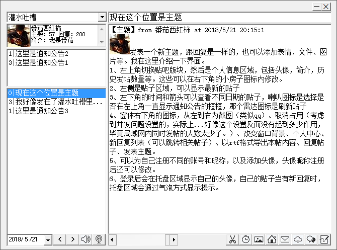
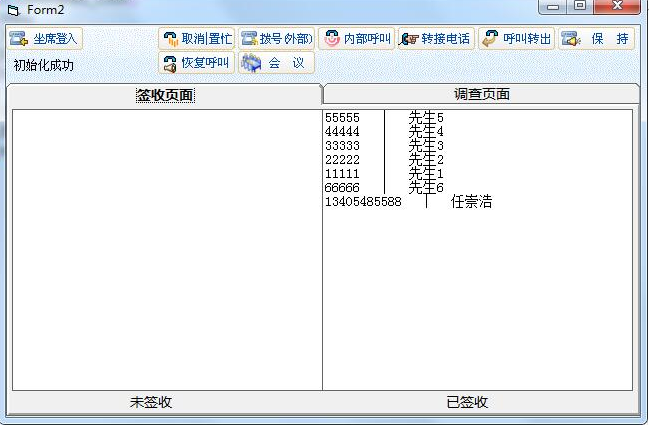

一、 局域网贴吧
由于单位工作性质，只有少数电脑连接外网，大部分是内网，因此需要搭建一个交流平台。由于都是普通电脑且要求系统稳定性，最简单的在普通电脑搭建简易服务器运行普通论坛的方式不适合，因此直接通过局域网共享数据的方式实现了一个简易贴吧。包括贴吧最基本的功能，如发帖、回复、回复后自动变为最新的贴子，也包括了发送表情、共享文件、替换背景、屏幕截图、新消息提醒，头像设置、贴吧内容导出、更新检测等一系列功能。
贴子使用不同的文件夹，通过ini文件与rtf文件配合保存，但是无论是文件还是表情、图片，都不是内嵌在rtf文件中的，由于rtf特殊性，其实简单的复制黏贴就可以把图片保存在里面（以代码的形式），但因为rtf文件中嵌入图片会极大的增加文件体积，考虑到贴吧会有较多次的使用，这种内嵌的方式消耗资源和带宽都很严重，所以采用了一种文件代码替换的方式，发送文件或表情后，程序将自动分析，会将相关表情文件的代码以类似[_675_]的特殊字符表示，当程序载入贴子时，会将其中的特殊字符串转换为相应的表情或者图片。（现在回顾一下想到，其实算是实现了超级简单的超文本浏览器了吧）
图片轮播了，5秒一张，一共6张，每个图片都有介绍的~

二、 周报月报日报自动统计和生成系统（包含了多个子程序模块）
因为交互操作只有导入/导出文件，功能全依赖代码了，人机交互的操作不多，因此无界面截图介绍。而且...最终生成的周报日报等，也涉及了一些保密信息，不便展示...
由于内网工单中的日、周、月报导出功能基本不可用，且内网系统不包含微博、微信等网络来源的信息，无法获得准确的信息，因此从内网工单系统中抓包得到post信息，通过post方式在vb中获取返回数据，然后对数据进行分析整理，最终导出ini格式的数据文件，该数据文件与微博、微信、又想的管理程序导出的数据文件可以通过导出模块整合到一起，最终生成doc格式的文档。
里面最大的难点在于内网系统的接口并未提供，所有的post方式都是通过抓包分析得出的，且最终获取到的数据，也是服务器返回的网页源码的形式，还需要对该源码进行分析和整理得到所需要的数据。
该文档涉及到各类数据数量，百分百，增速等，同时也涉及到了数据信息类别、数据量的排名等一些信息，最终导出的文档只需要改动文字部分内容，所有数据不需要人工修改。最终形成的doc文档，包括了表格+文字的形式，该程序实际实现了自动获取数据+自动计算以及表格填写等一系列功能。
五、电话问卷调查
此问卷调查工具实际上借助于需要浏览器才能登录的内网系统，将其控件提取并在vb程序中加载（华为控件），借用内网系统的服务器进行拨打电话、保存录音，在此基础上加载问卷题目及内容进行问卷调查，由于后期没有在实际工作中用到，个人测试通过后没有进行进一步完善。
难点更多的在于如何借用服务器实现通话和录音保存等操作，当时研究了很久，华为手册跟抓包同时使用，虽然最终实现的代码很简单，但程序的实现并不算容易，相比较来讲，一个不需要同时具备电话功能的问卷系统很容易实现。

介绍一下自己
1993年出生，2015年大学毕业，在山东科技大学泰山科技学院学的机械电子工程，目前在职，工作地点暂时觉得不方便透露啦，单位的主要工作虽然与计算机关系不大，但我目前基本上是负责单位的技术维护、程序开发和一些涉及新媒体的工作等。
目前能拿来就用的大概就是vb和qt了，对c语言也很熟悉，但是c语言本身不适合做项目，我本身学编程就是兴趣，是希望学了就用，而且都是现学现用的，基本上是边学边做，然后慢慢的就熟悉了，所以类似java、php、python这些，都接触过，也有基本的了解，但由于实际工作中用不到，我也没有动力去深入研究。
其实我对计算机感兴趣不仅限于编程，所有跟计算机有关系的内容我都感兴趣，包括但不限于各类软件，比如我还会一点儿photoshop，还会edius之类的视频剪辑软件，之前也有参加青啤微营销拍过微电影。然后是，各类音乐工作站、音频处理软件什么的，比如做音乐，就是写歌啊编曲啊这些，前段时间我还录了编曲教程传了B站，链接在这儿
【番茄的音乐教室】，虽然不专业，但是如果对电脑音乐或者音视频处理有特殊需求的话，好像...也挺适合我。（哈哈哈）
大概就是这样子吧，下面放一下我最新的一首歌，以及我的网易音乐人和微博主页，点击图片跳转~，照片作品什么的都在上面了，微博是我的朋友圈，哈哈哈。